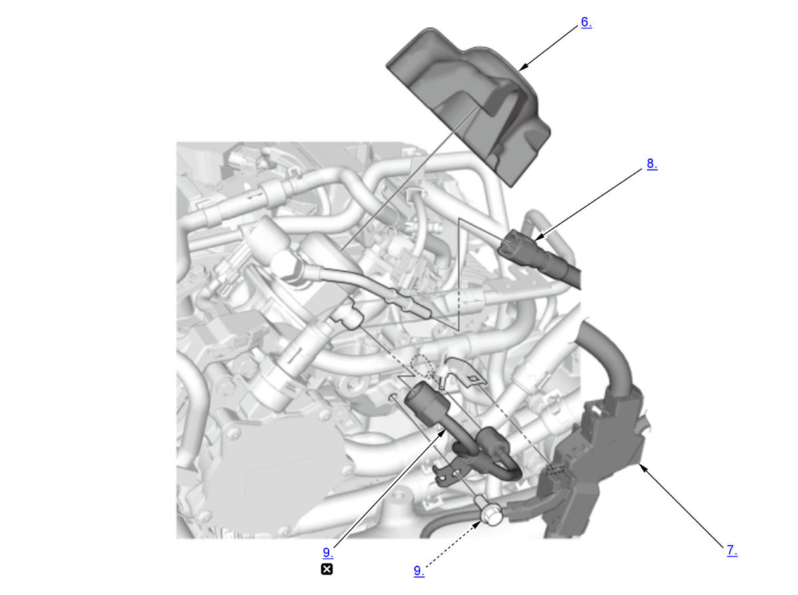
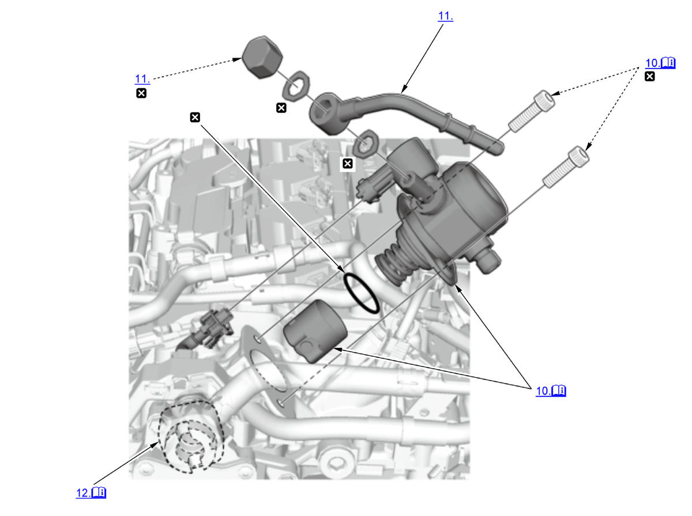

High Pressure Fuel Pump Removal and Installation (K20C1) (2017 2018 2019 2020 2021): Removal: Procedure
NOTE:
Numbered call-outs in figure pertain to list numbers in following procedure.

Courtesy of HONDA, U.S.A., INC. |
Replace |
NOTE:
Numbered call-outs in figure pertain to list numbers in following procedure.

Courtesy of HONDA, U.S.A., INC. |
Detailed information, notes and precautions |
|
Replace |
- Fuel Pressure - Relieve
- EVAP Canister Purge Valve and Purge Joint - Remove
- Throttle Body - Move
NOTE:
- Do not disconnect the water bypass hoses.
- Do not bend the water bypass hoses excessively.
- Intake Manifold - Remove
- Joint Pipe Bracket - Remove
- High Pressure Fuel Pump Cover - Remove
- Harness Holder - Move
- Quick-Connect Fitting - Disconnect
- Fuel Joint Pipe - Remove
- High Pressure Fuel Pump and Pump Lifter - Remove
1. Loosen the bolts alternately, and remove the high pressure fuel pump and the pump lifter. - Fuel Feed Pipe - Remove (If Necessary)
- High Pressure Fuel Pump Cam - Check
1. Rotate the crankshaft and check the high pressure fuel pump cam (A) for pits, scores, or excessively wear. If needed, replace the exhaust camshaft . 2. Install the pump lifter (A) to the high pressure fuel pump cam. 3. Set the gauge (B) on the pump lifter and hold it.
4. Rotate the crankshaft 720° and measure the four cam lobes height. If the cam lobes are excessively worn, replace the exhaust camshaft .
NOTE: The high pressure fuel pump cam has four cam lobes.
Cam Lobe Height Standard (New): 4.0 mm (0.157 in)